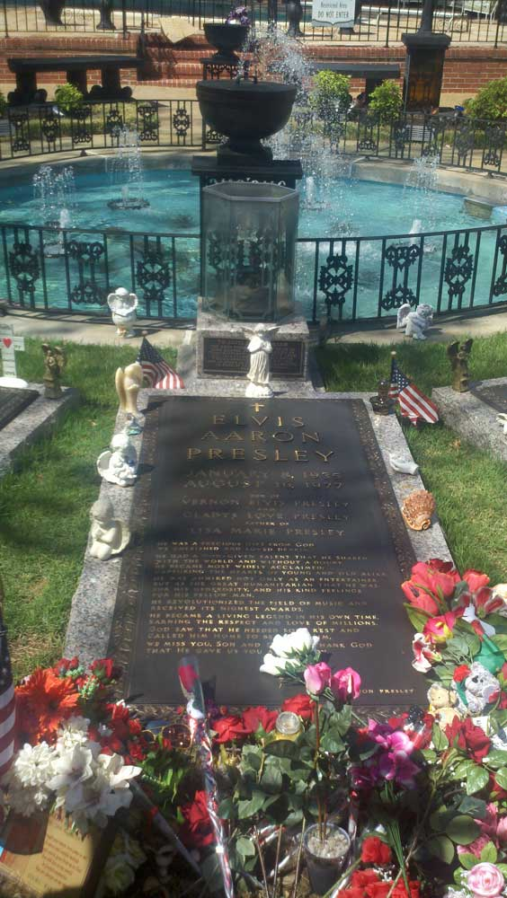
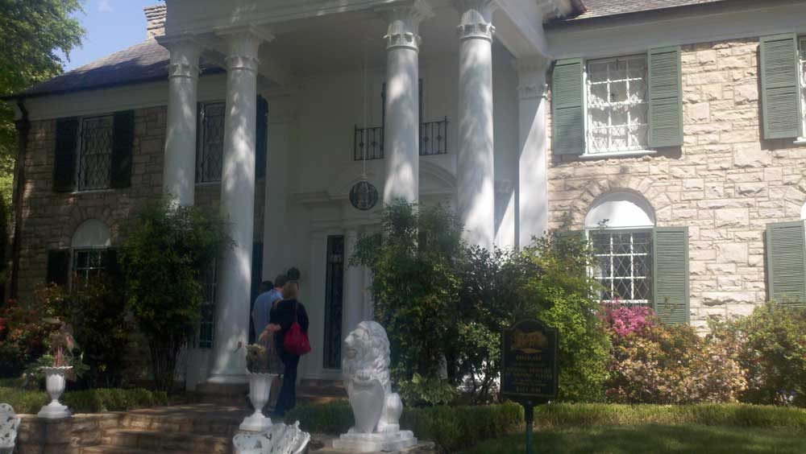
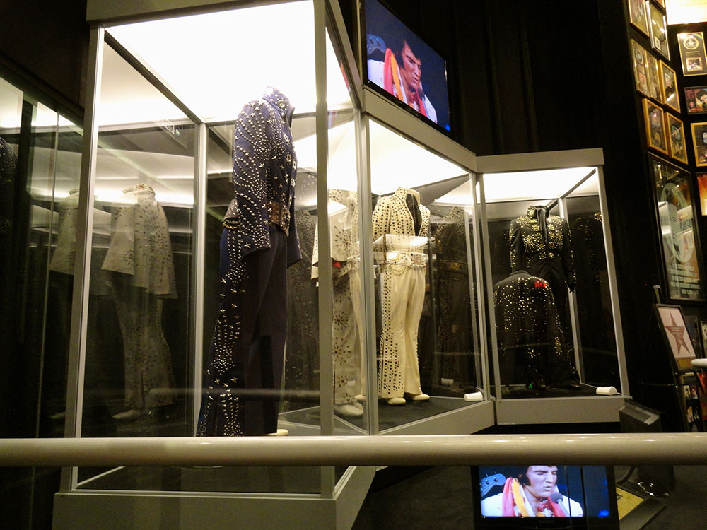
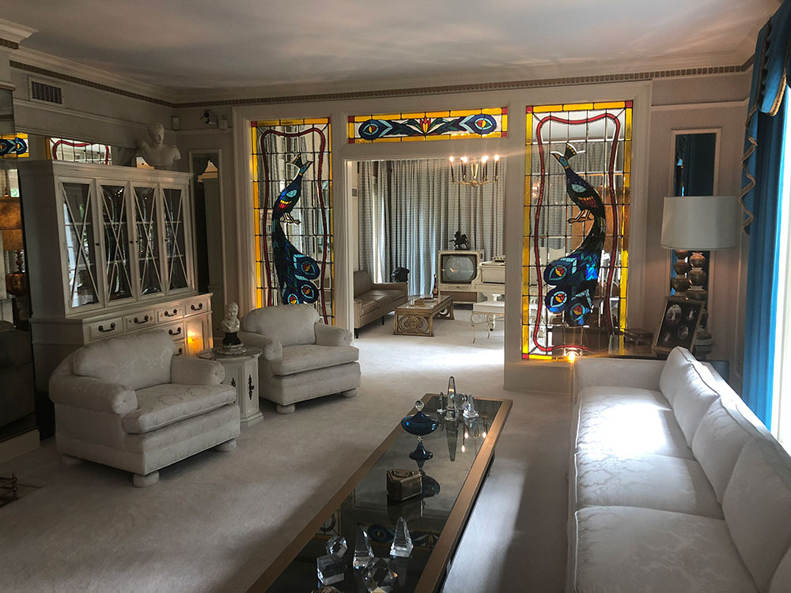
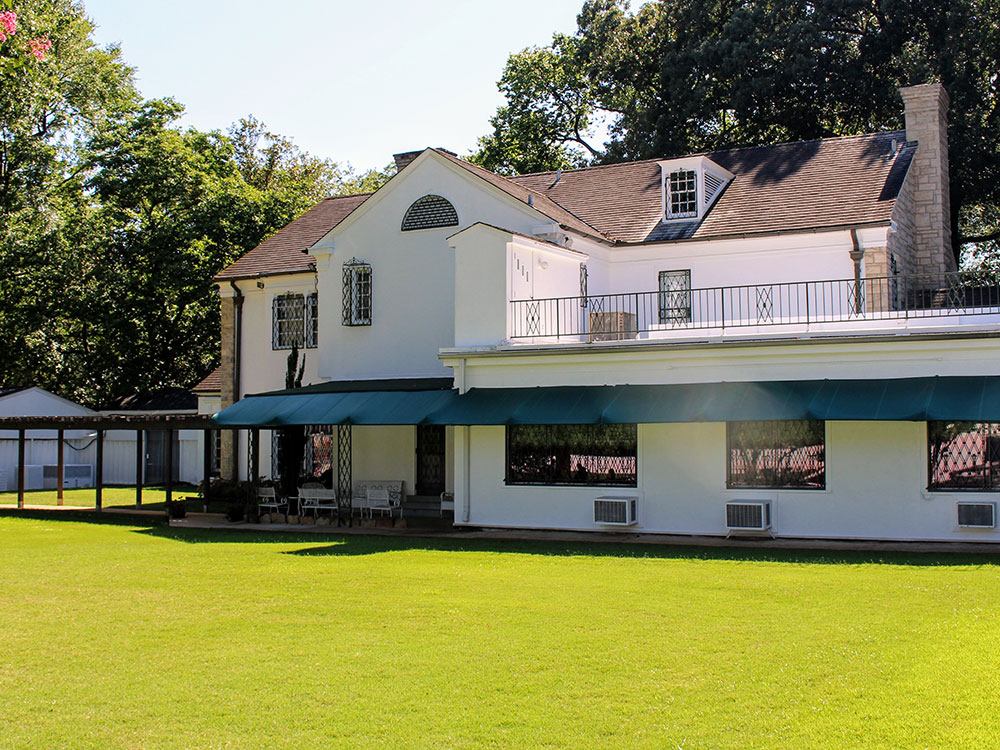

Mansion on a 13.8-acre (5.6-hectare) estate in Memphis, once owned by singer and actor Elvis Presley
General Information
Elvis' Airplanes: 10:00am to 4:00pm
Closed Thanksgiving Day and Christmas Day
Last mansion tour begins at 4:00pm
Elvis Presley's Memphis + Planes Tour: Adults $53, Children $30
VIP and Ultimate VIP tour options are available at higher prices
How to Get There
From Downtown Memphis (8 mi): Take I-55 S from downtown Memphis, exit onto Elvis Presley Boulevard (US-51 S), and continue south to Graceland at 3717 Elvis Presley Blvd.
Overview
Graceland is a mansion on a 13.8-acre (5.6-hectare) estate in Memphis, Tennessee, once owned by singer and actor Elvis Presley. His daughter, Lisa Marie Presley, inherited Graceland after his death in 1977. Graceland is located in the vast Whitehaven community, about nine miles (14 kilometers) from Downtown and less than four miles (6.4 km) north of the Mississippi border.
It was opened to the public as a museum on June 7, 1982. The site was listed in the National Register of Historic Places on November 7, 1991, becoming the first site related to rock and roll to be entered therein. Graceland was declared a National Historic Landmark on March 27, 2006, also a first for such a site. Graceland is the most-visited privately owned home in America with over 650,000 visitors a year, rivaling publicly owned houses such as Biltmore Estate, Hearst Castle and the White House.
Constructed at the top of a hill, in a grove of oaks, with rolling pastures surrounding, the house designed by Memphis architectural firm, Furbringer and Erhmanis, is a two-story, five bay residence in the Colonial Revival style with a side-facing gabled roof covered in asphalt shingles, a central two-story projecting pedimented portico, and one-story wings on its north and south sides. Attached to the wing is an additional one-story stuccoed wing that originally housed a four-car garage. There are two chimneys; one on the north exterior side wall, and a second chimney that rises through the roof ridge on the south side of house. The front and side facades of the central block are veneered with tan Tishomingo limestone from Mississippi, and its rear wall is stuccoed, as are the one-story wings. Front facade fenestration at the first floor includes 9-over-9 double-hung windows set in arched openings with wooden panels above the windows, and six-over-six double-hung windows at the second floor. Four stone steps, flanked by two large lions, ascend from the driveway to the two-story central projecting portico containing four Corinthian columns with capitals modeled after James Stuart's conjectural porticos for the "Tower of the Winds" in Athens. Its pediment has dentils and a central, small, leaded oval window. The columns at the corners of the portico are matched by pilasters on the front facade. The doorway has a broken arched pediment, full entablature, and engaged columns. Its transom and sidelights contain elaborate, colorful stained glass. Above the main entrance is a window with a shallow iron balcony.
Graceland is 17,552 square feet (1,630.6 m2) and has a total of 23 rooms, including eight bedrooms and bathrooms. To the right of the Entrance Hall, through an elliptical-arched opening with classical details, is the Living Room, with the adjoining Music Room behind a doorway framed by vivid large peacocks set in stained glass. The Music Room has a black baby grand piano and a 1950s style TV. The Living Room contains a 15-foot-long (4.6 m) white sofa against the wall overlooking the front yard. To the left is a white fireplace. The painting that was Elvis' last Christmas present from his father, Vernon, hangs in this room. Also displayed are photographs of Elvis' parents Vernon and Gladys, Elvis and Lisa Marie. Adjacent to the Living Room is a bedroom that was occupied by Elvis' parents. The walls, carpet, dresser, and queen size bed are bright white with the bed draped in a velvet-looking dark purple bedspread. The bedroom also has an en-suite full bathroom done in pink.
To the left of the Entrance Hall, mirroring the Living Room, is the Dining Room. The room features rounded curio cabinets in the north end corners of the room, and black marble flooring in the center of the room, with carpet around the perimeter. Connected to the Dining Room is the Kitchen that was not open to the public until 1995, as Elvis' aunt Delta used it until her death in 1993.
The original one-storey wing on the north end of the residence includes a mechanical room, bedroom, and bath. In the mid-1960s, Presley enlarged the house to create a den known as the Jungle Room which features an indoor waterfall of cut field stone on the north wall. In 1976, the Jungle Room was converted into a recording studio, where Presley recorded the bulk of his final two albums, From Elvis Presley Boulevard, Memphis, Tennessee (1976) and Moody Blue (1977); these were his final known recordings in a studio setting. During the mid-1960s expansion of the house, Presley constructed a large wing on the south side of the main house that was a sidewalk, between the music room in the original one-story wing and the swimming pool area, that connected to the house by a small enclosed gallery. The new wing initially housed a slot car track and to store his many items of appreciation, but was later remodeled to what is now known as the Trophy Building. The Trophy Building now features an exhibit about the Presley family, and it includes Priscilla's wedding dress, Elvis' wedding tuxedo, Lisa Marie's toy chest and baby clothes and more.
The Entrance Hall contains a white staircase leading to the second floor of the house with a wall of mirrors. The floor features Elvis' bedroom at the southwest corner that connects to his dressing room and bathroom in the northwest corner. His daughter Lisa Marie's bedroom is in the northeast corner, and a bedroom in the southeast corner served as Elvis' private personal office. The second floor is not open to visitors, out of respect for the Presley family, and partially to avoid any improper focus on the bathroom which was the site of his death. The floor has been untouched since the day Elvis died and is rarely seen by non-family members.
The TV room in the basement is where Elvis often watched three television sets at once, and was within close reach of a wet bar. The TV room's west wall is painted with Elvis' 1970s logo of a lightning bolt and cloud with the initials TCB, for 'taking care of business in a flash'. The south wall has three built-in television sets, a stereo, and cabinets for Elvis' record collection. Opposite of the TV room is the billiard room; Elvis, an avid billiards player, bought the pool table in 1960 and had the walls and ceiling covered with 350-400 yards of pleated cotton fabric after the two basement rooms were remodeled in 1974. One corner of the pool table has a tear in the felt caused by one of Elvis' friends who attempted a trick shot that failed.
The racquetball court is reminiscent of an old country club, furnished in dark leather and a functional bar. There is a sunken sitting area with the ever-present stereo system found throughout Graceland, as well as the dark brown upright piano upon which Elvis played for what were to be his last songs. Today the two story court has been restored to the way it was when Elvis used the building.
One of Presley's better known modifications was the addition of the Meditation Garden, designed and built by architect Bernard Grenadier, that was used by Elvis to reflect on any problems or situations that arose during his life. It is also where he, his parents, and grandmother, Minnie Mae Hood Presley, are buried. A small stone memorializes Elvis' twin brother Jesse Garon who died at birth.
The Graceland grounds include a new exhibit complex, Elvis Presley's Memphis, which includes a new car museum, Presley Motors, which houses Elvis' Pink Cadillac. The complex features new exhibits and museums, as well as a studio for Sirius Satellite Radio's all-Elvis Presley channel. Not far away his two planes Lisa Marie (a Convair 880) and Hound Dog II (a Lockheed JetStar) are on display. The jets are owned by Graceland and are on permanent display at Graceland.
This article uses material from the Wikipedia article "Graceland" which is released under the Creative Commons Attribution-Share-Alike License 3.0






